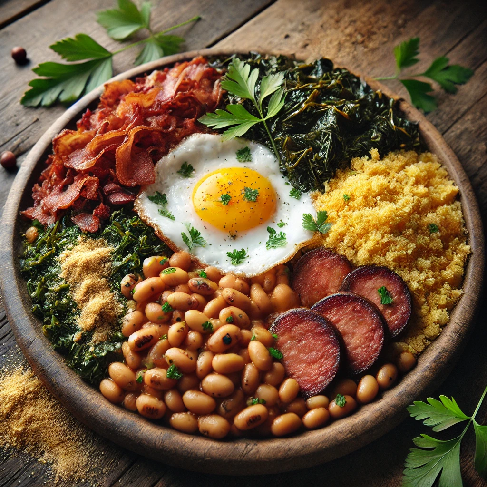

Descubra Receitas Deliciosas Para Todas as Ocasiões!
Receitas Populares
Tempo
Dificuldade
Dieta
Massa fofinha coberta com generosa calda quente de chocolate meio amargo. Um clássico que derrete na boca!

Bolo de Chocolate
Um clássico Irresistível.
Ver ReceitaMassa fininha e crocante, molho caseiro e muito queijo derretido. A pizza perfeita pra uma noite especial!

Pizza Caseira
Perfeita Para o Jantar.
Ver ReceitaCamadas generosas de massa, carne moída temperada e muito queijo gratinado. Conforto em forma de prato!

Lasanha
Camadas de Sabor.
Ver ReceitaPurê de batata cremoso escondendo carne moída bem temperada e gratinada com queijo. Uma delícia no forno!

Escondidinho de Carne Moída
Prático e Saboroso
Ver ReceitaFeijão com farinha, ovos, torresmo e cheiro-verde. Receita raiz, típica da culinária mineira!

Feijão Tropeiro
Tradição Mineira
Ver ReceitaCuscuz amarelinho com legumes e temperos frescos. Simples, leve e cheio de sabor nordestino.

Cuscuz
O Mais Tradicional
Ver ReceitaPor que escolher nossas receitas?
Fáceis de Fazer
Receitas simplificadas para todos os níveis de habilidade.
Variedade
De pratos rápidos a refeições elaboradas, temos de tudo.
Deliciosas
Sabor garantido em cada mordida.